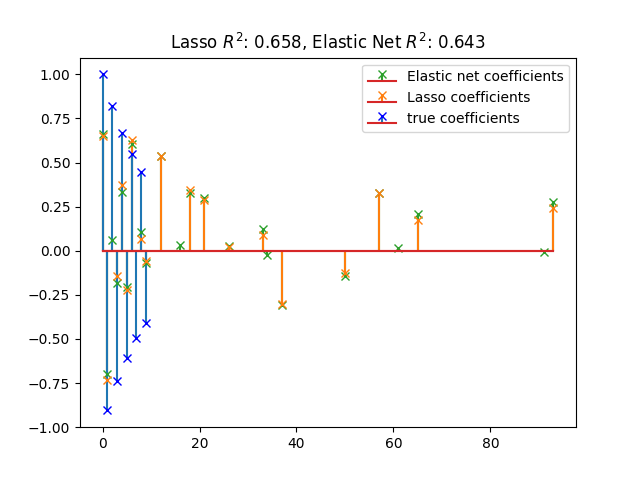

Note
Click here to download the full example code or run this example in your browser via Binder
Lasso and Elastic Net for Sparse Signals¶
Estimates Lasso and Elastic-Net regression models on a manually generated sparse signal corrupted with an additive noise. Estimated coefficients are compared with the ground-truth.
Out:
Lasso(alpha=0.1)
r^2 on test data : 0.658064
ElasticNet(alpha=0.1, l1_ratio=0.7)
r^2 on test data : 0.642515
print(__doc__)
import numpy as np
import matplotlib.pyplot as plt
from sklearn.metrics import r2_score
# #############################################################################
# Generate some sparse data to play with
np.random.seed(42)
n_samples, n_features = 50, 100
X = np.random.randn(n_samples, n_features)
# Decreasing coef w. alternated signs for visualization
idx = np.arange(n_features)
coef = (-1) ** idx * np.exp(-idx / 10)
coef[10:] = 0 # sparsify coef
y = np.dot(X, coef)
# Add noise
y += 0.01 * np.random.normal(size=n_samples)
# Split data in train set and test set
n_samples = X.shape[0]
X_train, y_train = X[:n_samples // 2], y[:n_samples // 2]
X_test, y_test = X[n_samples // 2:], y[n_samples // 2:]
# #############################################################################
# Lasso
from sklearn.linear_model import Lasso
alpha = 0.1
lasso = Lasso(alpha=alpha)
y_pred_lasso = lasso.fit(X_train, y_train).predict(X_test)
r2_score_lasso = r2_score(y_test, y_pred_lasso)
print(lasso)
print("r^2 on test data : %f" % r2_score_lasso)
# #############################################################################
# ElasticNet
from sklearn.linear_model import ElasticNet
enet = ElasticNet(alpha=alpha, l1_ratio=0.7)
y_pred_enet = enet.fit(X_train, y_train).predict(X_test)
r2_score_enet = r2_score(y_test, y_pred_enet)
print(enet)
print("r^2 on test data : %f" % r2_score_enet)
m, s, _ = plt.stem(np.where(enet.coef_)[0], enet.coef_[enet.coef_ != 0],
markerfmt='x', label='Elastic net coefficients',
use_line_collection=True)
plt.setp([m, s], color="#2ca02c")
m, s, _ = plt.stem(np.where(lasso.coef_)[0], lasso.coef_[lasso.coef_ != 0],
markerfmt='x', label='Lasso coefficients',
use_line_collection=True)
plt.setp([m, s], color='#ff7f0e')
plt.stem(np.where(coef)[0], coef[coef != 0], label='true coefficients',
markerfmt='bx', use_line_collection=True)
plt.legend(loc='best')
plt.title("Lasso $R^2$: %.3f, Elastic Net $R^2$: %.3f"
% (r2_score_lasso, r2_score_enet))
plt.show()
Total running time of the script: ( 0 minutes 0.187 seconds)